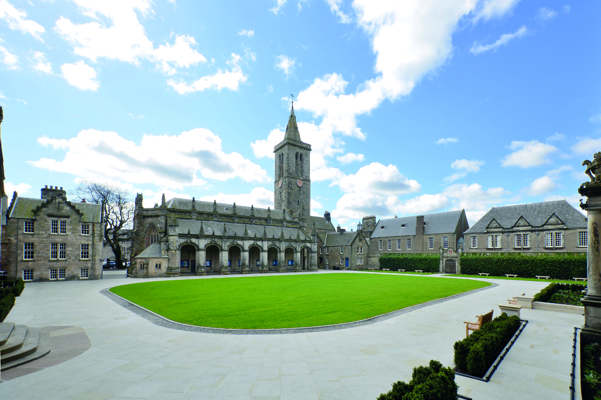
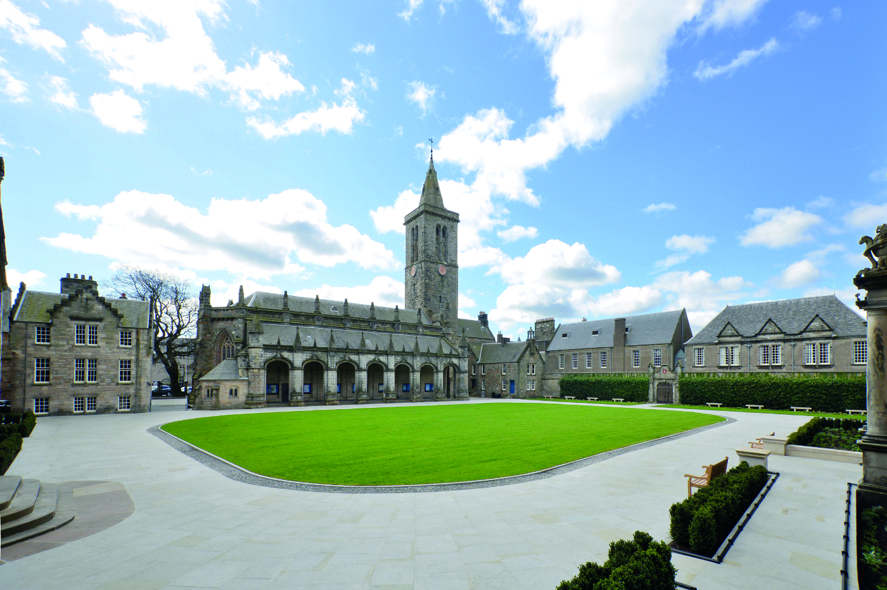
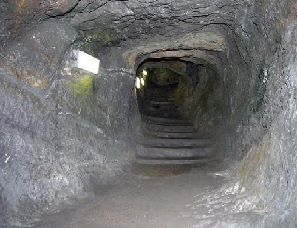

❮
❯

❮
❯
Welcome to our small guide 'A Day in St Andrews', we hope to give you a snippet of the delights St Andrews has to offer. For more resources, you can peruse Explore Scotland, the University of St Andrews and Visit Scotland.
A breathtaking scene
This picturesque castle has been standing for almost 1000 years and is rich with history. Once the house of the powerful Bishops of St Andrews it was badly damaged during a siege in 1547 and partially rebuilt in the following years. A wonderful place to explore with the all family it has a small museum at the forefront and an exciting mine carved during the siege which you can all clamber down!
The Mine
Placard
The View
An awe-inspiring ruin
This imposing but beautiful cathedral has been dutifully standing watch over Saint Andrews for almost 1000 years, scourged by the Scottish Reformation it remains a testament to the skilled hands of its masons. Feel free to roam the grounds which now is largely a graveyard and climb the impressive tower of St Rule for the best views in Saint Andrews for miles. The small museum and gift shop have a trove of treasures sure to delight all.
Cathedral Museum
St Mary on the Rock

St Rule's Tower
St Salvator’s Quad, or Sallies Quad as it is affectionately called by students, lies at the heart of the town centre and is an important and historic site, with the adjacent chapel and lecture theatres. The annual Raisin foam fight has took place here before it moved to Lower College Lawn in 2014.
A fine selection
St Andrews is not short on choice for great places to eat. Why not visit William and Kate's favourite coffee spot at North Point Cafe, just opposite the Castle? Or try haggis at Forgan's for the essential Scottish experience? If you want something cheaper how about popping to our award-winning Fish and Chip restaurant Cromars, just opposite the Quad.
Adult Ticket Cathedral
£4.50
Adult Ticket Castle
£5.50
Combined Ticket for Castle and Cathedral
£8
St Salvator's Quadrangle
Free
Food
Your choice!